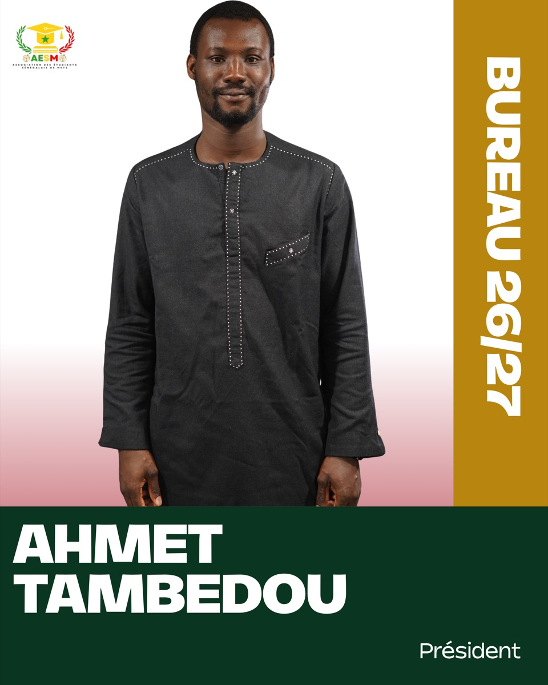

Après l’arrivée d’Ahmet Tambedou à la présidence, l’AESM prépare une nouvelle année de vie associative. La composition transmise rassemble des membres répartis entre douze pôles, de la présidence à la pédagogie, en passant par le social, la communication et les partenariats.
Un collectif pour faire vivre l’association
Accueillir, écouter, partager les informations et préparer les rendez-vous de l’année : la vie de l’AESM repose sur l’engagement de ses membres. Cette équipe donne un visage à ce travail collectif et permet à chacun de mieux connaître les personnes qui y prennent part.
Les membres et leurs pôles
- Présidence : Ahmet TAMBEDOU (Président).
- Secrétariat général : Rama DIOUF (Adjointe au secrétaire général); Babacar DRAME (Secrétaire général); Dame DIAKHATE (Adjoint au secrétaire général).
- Trésorerie : Isseu SOW KANE (Trésorière); Cheikh BOYE (Adjoint au trésorier).
- Contrôle des comptes : Aminata BOYE (Commissaire aux comptes).
- Pédagogie : Ibrahim NDIAYE (Adjoint au pôle pédagogique).
- Social : Malang CISSE (Responsable du pôle social); Ndeye NDIAYE (Adjointe au pôle social); Adja SARR (Adjointe au pôle social); Mbaye FALL (Adjoint au pôle social); Khoudia DIOUM (Adjointe au pôle social); Astou MBOW (Adjointe au pôle social).
- Relations extérieures : Moustapha MBOW (Adjoint au pôle relations extérieures); Alioune SOW (Responsable des relations extérieures); Cheikh SOW (Responsable des relations extérieures); Aminata NDIAYE (Adjointe aux relations extérieures); Malick BOYE (Adjoint aux relations extérieures).
- Organisation : Aissatou SARR (Responsable du pôle organisation); Saliou MBENGUE (Adjoint au pôle organisation); Satan NDIAYE (Adjointe au pôle organisation); Mariame SIBY (Adjointe au pôle organisation).
- Communication et contenu : Djibi Mamadou THIAM (Créateur de contenu); Modou DIAGNE (Adjoint à la communication); Doudou NDIAYE (Créateur de contenu).
- Partenariat : Helene NDIOLENE (Adjointe au pôle partenariat).
- Culture : Mohamed SYLLA (Responsable du pôle culturel).
- Sport : Papy HAMOUD (Responsable du pôle sport).
Félicitations et pleine réussite à toute l’équipe
Nous adressons nos félicitations aux membres du nouveau bureau et leur souhaitons une année riche en échanges, en entraide et en projets menés ensemble. Que l’écoute et le respect accompagnent leur engagement au service des étudiants sénégalais de Metz.
Merci également aux équipes précédentes pour le temps consacré à l’association. Cette nouvelle année s’inscrit dans la continuité d’une communauté qui grandit grâce aux contributions de chacun.
Une place pour chaque membre
Aux étudiantes et aux étudiants : vos idées, votre participation et votre soutien comptent. Les rendez-vous de l’association sont autant d’occasions de se rencontrer et de contribuer à cette dynamique commune.
Souhaitons à toute l’équipe un mandat de solidarité, de disponibilité et de réussite partagée.